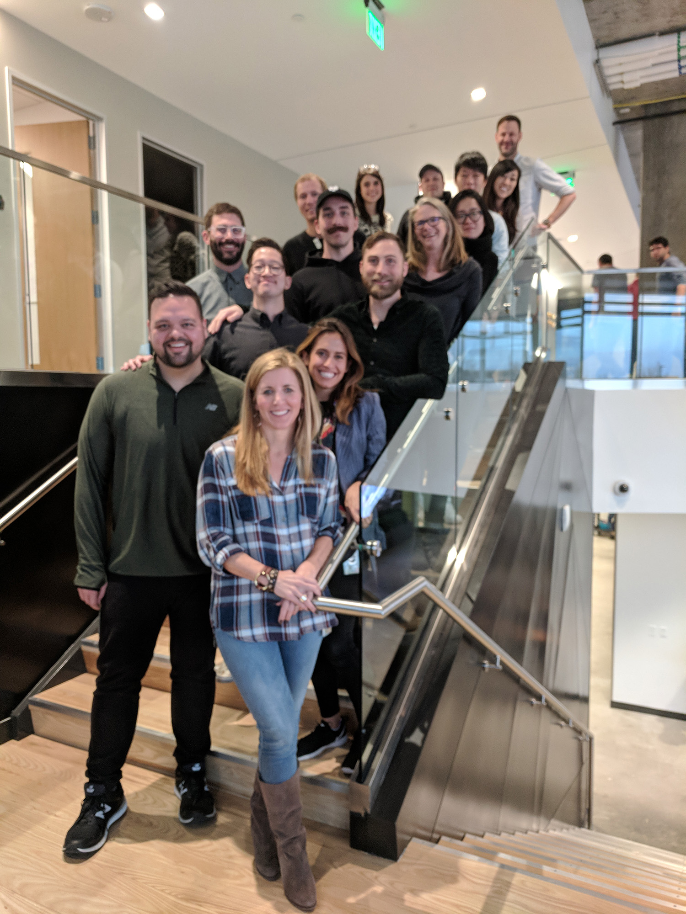
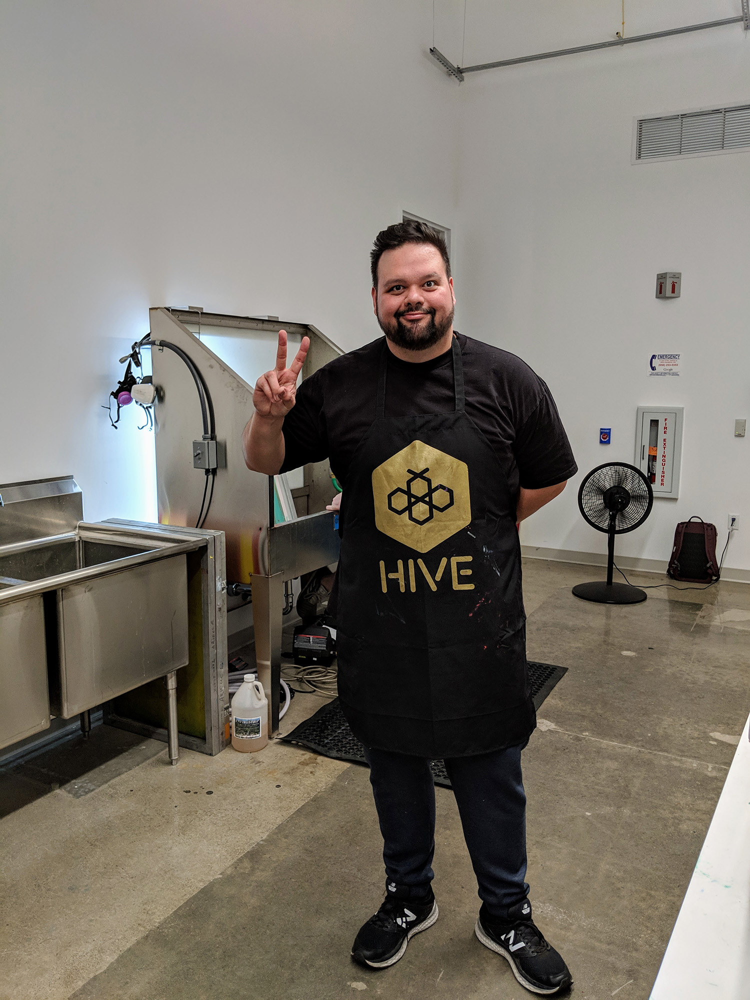
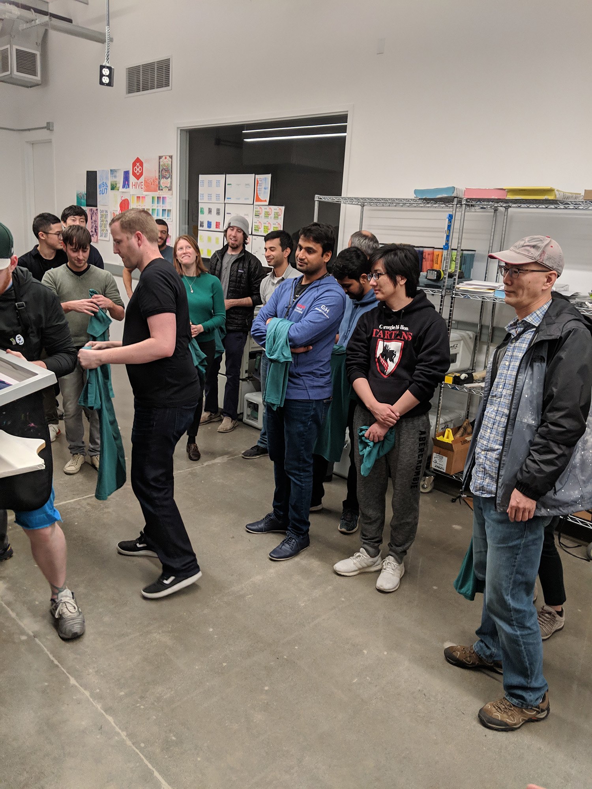
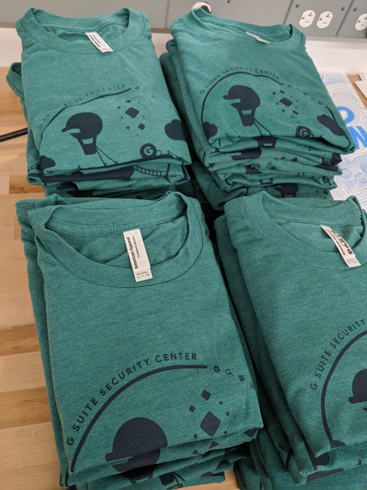
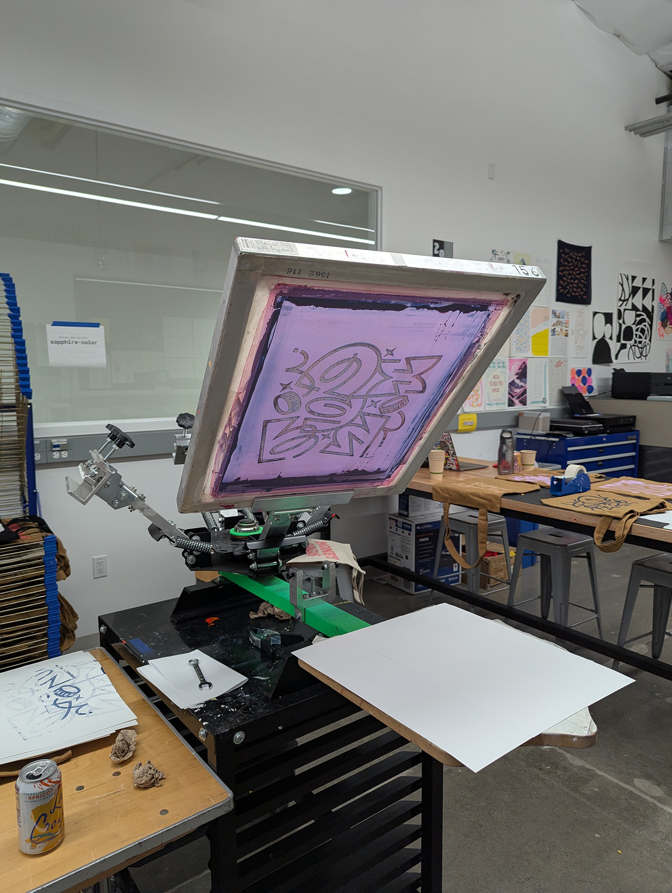

What I've learned running design teams at Google and HubSpot.

HubSpot: Customer Journey Activation.
HubSpot | 2025 – Now
Learning together is part of the job now.
I joined HubSpot in 2025 to lead design for Customer Journey Activation, the team that gets new customers to real value quickly. The first year was really two jobs. One was shipping. The other was building a team that could keep up with how fast our tools were changing, including me.
- Going first. I share my own AI workflows in our team Slack channel, including the ones that flopped, and I ask everyone else to share theirs. It's a lot easier to post something rough when your manager already has.
- A skill library we all write. I wrote the first few Claude Code skills: a "grill me" skill, a product principles skill, and one that helps people write Product Quality Review docs. Two designers on the team have since added skills of their own.
- Strategy you can check. I write vision and strategy with Claude, grounded in Amplitude, Snowflake and Glean, and every draft goes through fresh review sessions before it reaches the team. How that works.
- Getting everyone building. A Claude Code onboarding program for the team, GitHub Pages so anyone can share a working prototype without waiting on engineering, and Figma MCP so our design files and AI tools can talk to each other.
- The less fun part. I dealt with underperformance directly and with documentation, and gave people a real chance to turn it around. Then I hired for craft and for people who actually want to learn from each other.
We shipped HubSpot's first agentic setup experience.
Agentic Setup
Our team is measured on activation: getting new HubSpot customers to the point where they're really using the product. The old onboarding was manual and full of forms, and a lot of people dropped off. So we replaced it with a conversation. Behind it, specialized sub-agents each handle one job, like building the customer's CRM pipeline, setting up properties, or capturing their goals, and they create the actual CRM objects as the conversation goes. By the time the customer is done talking, a good chunk of setup is already done.
The Challenge
An LLM won't give you the same answer twice. For a team used to approving every word in a spec, that was a real adjustment. The agent might pick a word we'd never have signed off on, and we had to get comfortable with that not being a bug.
How We Solved It
I wrote new bug severity criteria with AI, using feedback from our early launches, outside sources and my own judgment. The rule that mattered most: if the agent got the substance wrong, that blocked launch. If it just phrased something differently, that was fine. It gave everyone the same standard to triage against on a tight timeline, and it cut down a lot of arguing.
Increase in customer activation
Payments Platform Buyflows: what worked well?
Payments Platform Buyflows
Getting a team to share early and trust each other.
- Weekly design jams. A standing slot to show work early. We got specific about what kind of feedback each person wanted, and wrote down action items so nothing evaporated.
- Sprint retros. A designer on my team suggested these, and they stuck. Every two weeks we talked about how things went, traded problems and fixes, and gave each other shoutouts.
- Sprint planning. Two-week blocks, kicked off with a meeting to agree on who was doing what and how we'd approach it.
- Rolling project docs. One running deck or doc per project, with every review, piece of feedback and decision in one place. Months later you could still see why something ended up the way it did.
- A newsletter. An email to the wider Payments org so people could see our work, ask questions and push back.
- Making stuff together. We used a maker space at Google to screenprint our own t-shirts and tote bags. A great excuse to get everyone in one room and use some different design muscles.
Systems thinking
Changing how the team thought about the system, not just the screen.
When I joined, the team was moving fast and a lot of design decisions didn't have much reasoning behind them. So I started asking for the rationale, every time. The team stepped up, and the work got noticeably stronger. From there we wrote buyflow principles everyone agreed to, which made it much easier to push back on designs that broke them.
A few other habits stuck:
- Reuse before you invent. New components are great when the problem needs one, but every addition makes the system more complex.
- Audit competitors. We couldn't always tell whether their patterns worked, but we could see what users were already used to. Stakeholders always want to know anyway.
- Pressure test. Designers took their patterns into other Platform experiences to see where they'd scale and where they'd break.
- Contribute back. The team added new components to the design kit, and the bar was high. You had to account for every behavior, state and variant, which is a great systems-thinking workout.
Career growth
Shipping and growing people at the same time.
- Assigning projects on purpose. I matched projects to what each person needed: a skill to build, a strength to use, or the kind of impact someone close to promo needed to show.
- Getting cross-functional commitment early. Everyone's bandwidth is already spoken for, so strategic changes had to be agreed during planning, not after.
- Timely feedback. Hard feedback lands better close to the moment. Nobody should be surprised by their rating.
- Clear expectations. People need a written standard with examples to measure themselves against, not someone's vague impression.
Payments Platform Buyflows: lessons learned.
Payments Platform Buyflows
Let's just say the lessons were plentiful. Three that stuck:
Working in a silo doesn't work.
You can do great work, but if your cross-functional partners aren't fully on board to get it launched, it won't ship. We switched to smaller, incremental experiments that matched our PM partners' appetite for risk.
People say one thing and do another.
Users told us one thing in research, then the quantitative tests said something else. After that we ran qualitative research with bigger samples and made our studies much more region-specific.
Always be ready to show and tell.
At any moment you should be able to explain what your team is doing, why, how it's going and what it's changing. Assume nobody outside your team knows, and that they won't have time to care until something is on fire.
Workspace Security & Control: what went well?
Workspace Security & Control
I grew the team from 3 to 7 in about a year. Security was becoming a big deal for Workspace as we started landing larger customers, and the space was changing quickly, so hiring fast mattered.
Most of what we built came straight out of conversations with admins and customers. The real payoff was how the products connected. An alert could become a query, which could lead to an action. A query result could become a dashboard someone watches. A policy change could trigger new alerts. Each new product made the others more useful.
Workspace Security & Control: lessons learned.
Workspace Security & Control
I had to learn to be a manager very quickly.
Managing managers.
With a layer between me and some of the team, I had to work harder to stay connected. Skip-levels helped, so did showing up to reviews and asking people about their teams.
Egos and drama.
One person on the team caused a lot of friction with the people around them and always seemed sure they were the smartest person in the room. A lot of my time went into smoothing over the situations that created.




